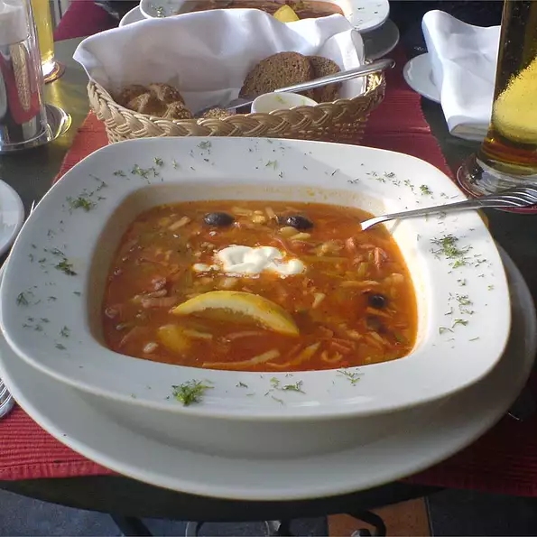

Solianka

Description
This is a traditional Russian soup that is served as a meal by itself. Vodka is usually served with it. Garnish with fresh lemon slices and sour cream.
Ingredients
- 2 ounces dried mushrooms
- ¾ cup water
- ½ cup unsalted butter
- 3 onions, chopped
- 1 cup cooked diced veal
- 1 cup diced ham
- ¼ pound kielbasa sausage, cut into 1 inch pieces
- 2 quarts beef stock
- 3 bay leaves
- 10 black peppercorns
- 2 dill pickles, diced
- 2 tablespoons capers
- 12 marinated mushrooms
- 1 (28 ounce) can Italian-style whole peeled tomatoes
- 2 tablespoons tomato paste
- 1 ½ tablespoons all-purpose flour
- 12 kalamata olives
- ⅓ cup chopped fresh dill weed
- ¼ teaspoon dried marjoram
- 3 cloves garlic, minced
- ¼ cup dill pickle juice
- 1 teaspoon Hungarian sweet paprika
- salt to taste
- ground black pepper to taste
Steps
- Soak mushrooms in 3/4 cup water until tender, 20 to 30 minutes. Set aside.
- Melt half the butter and saute the onions, meats, and rehydrated mushrooms. Add the stock and liquid from the mushrooms and bring to a boil. Make a bouquet garni by tying the bay leaves and peppercorns tightly in cheesecloth. Lower the heat and add the bouquet garni, pickles, capers, and marinated mushrooms. Simmer 10-15 minutes.
- Melt remaining butter in a skillet and cook the tomatoes and tomato paste for a few minutes, then add the flour and saute for another few minutes. Add a cup of the soup to the skillet and stir in well, then return pan ingredients to the soup pot.
- Add the olives, dill, marjoram, garlic, pickle juice, and paprika. Adjust soup's seasoning with salt and pepper; simmer another 10-15 minutes.
- Remove pot from heat and remove bouquet garni. Adjust seasonings and serve with sour cream and lemon.